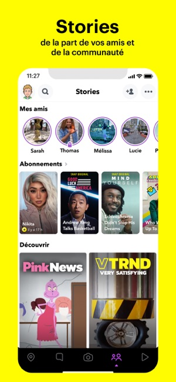
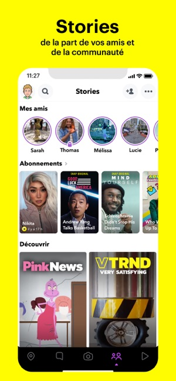

Snapchat est un moyen rapide et amusant de partager un moment avec votre famille et vos amis
Snapchat s'ouvre directement sur l'appareil photo. Il suffit alors d'appuyer pour prendre une photo, ou d'appuyer longuement pour commencer à filmer. Faites parler votre créativité avec des Lenses, des Filtres, des Bitmojis et bien plus ! Essayez chaque jour de nouvelles Lenses, créées par la communauté Snapchat !
 

Restez en contact avec vos amis grâce aux messages instantanés, ou partagez votre journée dans les Stories de groupe. Retrouvez jusqu'à 16 amis en même temps lors des appels vidéo, et agrémentez la discussion par des Lenses et des Filtres ! Exprimez-vous à l'aide de Friendmojis, des Bitmojis créés exclusivement pour vous et l'un(e) de vos ami(e)s.
Regardez les Stories de vos amis pour suivre leur journée. La communauté Snapchat sélectionne pour vous des Stories qui correspondent à vos centres d'intérêt. Découvrez les dernières actualités et des Émissions originales exclusives.